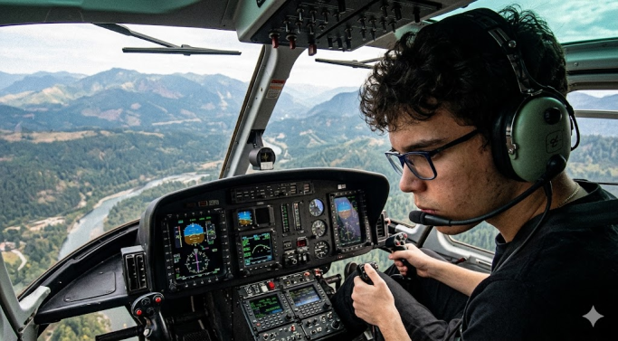

Meu nome é Danilo Ramos Trevisan, tenho 17 anos e sou estudante do ensino médio e faço técnico em informática.
Sou apaixonado por tecnologia, programação e desenvolvimento de software.
Sou alguem com muita curiosidade, o que facilita meu aprendizado e a exploração de novos assuntos.
Atualmente estou focado em aprender desenvolvimento web e explorar outras áreas da tecnologia.
Meu tipo de personalidade (MBTI) é INTP.
Foto minha

Hobbies
Gosto de assistir vídeos de curiosidades e criadores como 1155 do ET e Saiko.
Também curto animes (meu favorito é Frieren), tocar guitarra, ouvir música
(lofi, rock e metal) e jogar jogos como CS e Omori.
1155 do ETFrierenOmoriINTP / MBTI
Contato
Se você quiser entrar em contato comigo, pode me enviar uma mensagem pelo e-mail, ver meu github ou me seguir nas redes sociais:
Obs: O e-mail é apenas para fins de contato profissional. Caso o link não funcione, copie o endereço: daniloramostrevisann@gmail.com